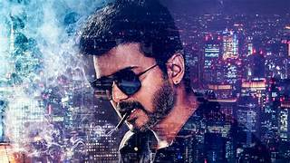

JOSEPH VIJAY CHANDRASEKAR
BEST ACTOR | BEST POLITICIAN | BEST PLAYBACK SINGER
.jpg)
.jpg)
Joseph Vijay. Actor: Mersal. Joseph Vijay Chandrasekhar (born 22 June 1974), known mononymously as Vijay, is an Indian actor, dancer, playback singer and philanthropist who works predominantly in Tamil cinema and also appeared in other Indian languages films.Thalapathy Vijay is one of the most celebrated and influential actors in Indian cinema, especially in Tamil film industry. Fondly called Thalapathy (meaning commander), he has earned a massive fan following across the world for his powerful screen presence, versatile acting, and inspiring personality. Starting his career as a child artist, Vijay gradually rose to become a leading hero, delivering many blockbuster movies. Beyond his stylish performances and mass appeal, he is admired for his humility, simplicity, and social service.

.jpg)

Kudumbam Narada
Naan Sigappu ManithaN
Vasantha Raagam Vijay
Sattam Oru Vilayattu Raja
Ithu Engal Neethi Vijay
Naalaiya Theerpu Vijay Mehta Debut as a lead
Senthoorapandi Vijay
Rasigan Vijay
Deva Deva
Rajavin Parvaiyile Raja
Vishnu Vishnu (Krishna)
Chandralekha Rahim Rowther
1996 Coimbatore Mappillai Balu
Poove Unakkaga Ra
Vasantha Vaasal Vijay
Maanbumigu Maanavan Sivaraj
Selva Selvan
Kaalamellam Kaathiruppen Kannan
Love Today Ganesh
Once More Vijay
Nerrukku Ner Vijay
Kadhalukku Mariyadhai Jeevanandham (Jeeva)
1998 Ninaithen Vandhai Gokulakrishnan
Priyamudan Vasanth
Nilaave Vaa Siluvai
Thullatha Manamum Thullum Kutty
Endrendrum Kadhal Vijay
Nenjinile Karunakaran (Karna)
Minsara Kanna Kannan (Kasi)
Kannukkul Nilavu Gautham Prabhakar 25th film
Kushi Shiva
Priyamaanavale Vijay Vishwanathan
Friends Aravindhan
Badri Sri Badrinatha Moorthy (Badri)
Shahjahan Ashok Ilango
Thamizhan C. J. Surya
Youth Shiva
Bagavathi Bhagavathi
Vaseegara Boopathi
Pudhiya Geethai Sarathy
Thirumalai Thirumalai
Udhaya Udhayakumaran (Udhaya)
Ghilli Saravanavelu
Madhurey Maduravel (Madhurey)
Thirupaachi Sivagiri (Giri)
Sachein Sachein
Sukran Sukran Extended cameo
Sivakasi Muthappa (Sivakasi)[a]
Aathi Aathikesavan
Pokkiri Sathyamoorthy (Thamizh)
Azhagiya Tamil Magan Guru, Prasad[b]
Kuruvi Vetrivel (Velu, Kuruvi)
Pandhayam Himself Guest appearance
Villu Pugazh, Saravanan[b]
Vettaikaaran "Police" Ravi
Sura Sura 50th film
Kaavalan Bhoominathan
Velayudham Velu (Velayudham)
Nanban Kosaksi Pasapugazh (Panchavan Parivendan)[a]
Rowdy Rathore Himself Hindi film; Guest appearance in the song "Chinta Ta"
Thuppakki Jagadish Dhanapal
Thalaivaa Vishwa Ramadorai (Vishwa Bhai)
Jilla Shakthi Aarumugam (Jilla)
Kaththi Kathiresan (Kaththi), Jeevanandham[b]
Puli Marudheeran, Pulivendhan[b]
Theri A. Vijay Kumar (Joseph Kuruvilla, Dharmeshwar)[a]
Bairavaa Bairavaa
Mersal Vetri, Maaran, Vetrimaaran[c]
Sarkar Sundar Ramaswamy
Bigil Michael Rayappan (Bigil), Rayappan[b]
Master JD (John Durairaj)
Beast Veera Raghavan
Varisu Vijay Rajendran
The Greatest Of All Time M.S. Gandhi, Jeevan Gandhi (Sanjay Menon) [b]
Vijay is often seen as a good politician because of his ability to connect with people and understand their problems. He speaks in a simple and clear manner, which makes his message reach a wide audience. His popularity as an actor has also helped him gain a strong following, but beyond that, he is admired for addressing social issues and standing up for the common man. Vijay’s leadership style is calm yet determined, and he presents himself as someone who truly cares about the welfare of the people. Many believe that his honesty, popularity, and commitment to change make him a strong and promising politician.
.jpg)
TVK (Tamilaga Vettri Kazhagam) is the political party founded by actor Thalapathy Vijay. The party was officially announced in February 2024 with the aim of bringing change in Tamil Nadu politics. Vijay said TVK will focus mainly on the welfare of people, education, employment, healthcare, and fighting against corruption.The name itself — Tamilaga Vettri Kazhagam — means Victory Federation of Tamil Nadu, which shows the party’s vision to uplift the state and ensure victory for the common people. TVK has a large youth following because Vijay has always inspired youngsters through his movies and real-life social activities. The party also emphasizes clean politics, transparency, and giving importance to ordinary people rather than dynasty politics. In short, TVK stands for change, honesty, and people’s welfare, and it carries the hopes of many fans and the younger generation who believe Vijay can bring a fresh political culture to Tamil Nadu.